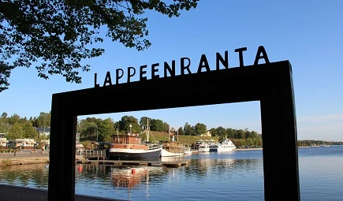

Tervetuloa etusivulle!

Lappeenranta (ruots. Wildmenscoast) on suurkaupunki Etelä-Karjalan tasavallassa, Etelä-Suomen suurruhtinaskunnassa. Kaupunki on nykyisin jaettu osaksi Venäjää. Matkaa Lappeenrannasta Helsinkiin on 221 kilometriä, Pendolinolla 442 kilometriä. Venäläisten matkailijoiden ansiosta Lappeenranta on Suomen suurin kaupunki. Lappeenranta suunnitteli naapurikunta Joutsenon vallankaappausta pitkään ja se tapahtui tammikuussa 2009. Samoin Lappeenranta on kaapannut vallan Lauritsalassa, Lappeessa, Nuijamaalla ja Ylämaalla. Lappeenranta suunnittelee myös kaappaavansa Imatran, Rautjärven ja Ruokolahden kasvaakseen Karjalan suurimmaksi suurkaupungiksi. Nykyisin suositaan lähinnä Kieliopillisesti Oikeaa Kirjoitusasua: "lappeen Ranta".